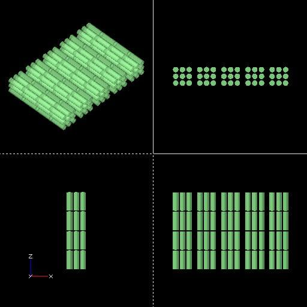

Bus Bar Design
Slightly complex to have stacked per cell fuses, so investigating this here.

Central cell can be replaced by a plastic tube used for cabling and structural support for stacking p-groups
Battery Pack 3 |
Version | v0.1 alpha | |
|---|---|---|---|
| Created | |||
| Author | Ivan Nikolic | Updated | [2025-01-25 Thu] |

Slightly complex to have stacked per cell fuses, so investigating this here.
Central cell can be replaced by a plastic tube used for cabling and structural support for stacking p-groups

some shorting concerns
If support plastic melts due to a small short, there is a possibility of a larger short and cascading failiure if a cell rotates in X or Y dimension and connects the negative terminal to positive bus bar. but not totally sure. it depends on the cell design (is top of the cell positive terminal or are corners of it negative?)
Could try and ensure that bus bar hole sizes and distances are such that this is impossible even with 0 plastic support (connecting negative terminal to bus bar disconnects bottom bus bar? this might not be possible to design?)
Could cut the cell mounts out of a material with a higher melting point
Could use an alu structural bracing around the middle of the cells for support. Can design a bus bar that holds cells in the middle.
How likely is for a cell to heat up so much to melt an engineering plastic? what are the internal cell safety mechanisms? should test the fuse itself as well.
Is this an issue for pack1 as well? (maybe not because cell bottoms are welded vs just pressed in this case, tho I don't trust those welds much)